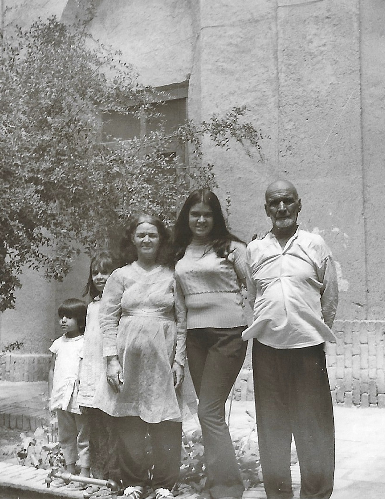

Memories
Moments from a luminous life.

Grace
Maryam carried beauty quietly, without needing attention, but never without being noticed by those who loved her.

Education
Her belief in learning, discipline, and becoming continues through the Foundation’s educational mission.

Resilience
Through difficult chapters and uncertain transitions, Maryam remained faithful, strong, and devoted to her family.

Family
Her love for family was constant, sacrificial, and woven through every part of her life.

Life
Maryam’s story includes devotion, work, migration, motherhood, sacrifice, and a love that endured every hardship.

Beauty
She created beauty everywhere — in her home, her cooking, her sewing, her prayers, and the way people felt around her.